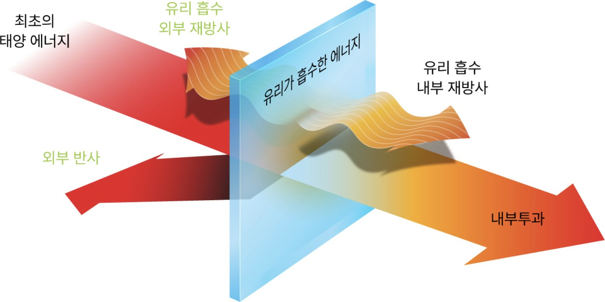
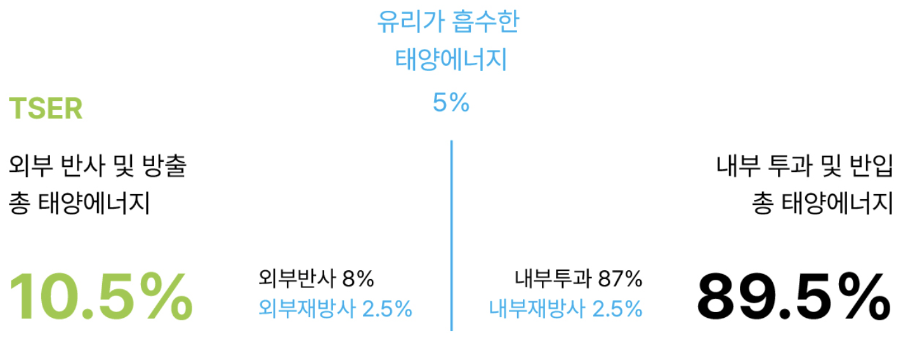
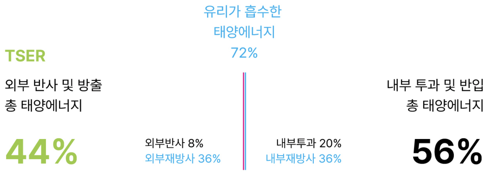
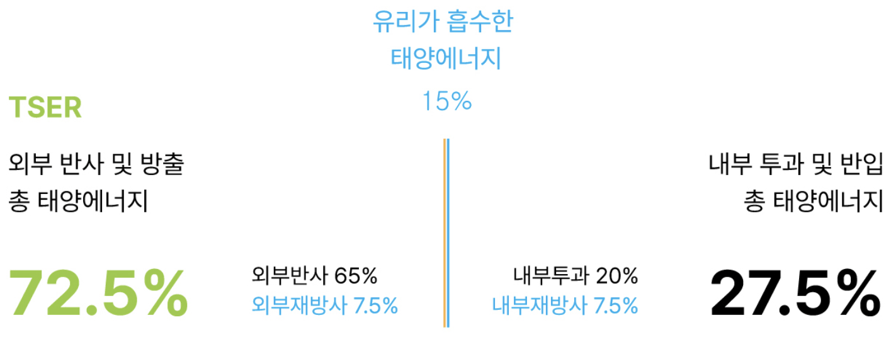

The Principle of Solar Heat Rejection
필름의
열차단 원리.
TSER, 총태양에너지차단율에 대한 이해.

01 —태양 에너지와 유리.
지표면에 도달하는 태양 복사 에너지는 적외선(49%), 가시광선(49%), 자외선(2%) 등으로 구성되어 있습니다. 열차단 성능에 대해 이야기할 때에는 필름에 흡수되었다가 재방출되는 에너지의 양도 함께 고려해야 하고, 적외선·가시광선·자외선을 포함한 전체 태양에너지 차단 능력을 고려해야 합니다.
이 전체 차단 능력을 나타내는 척도가, 총 태양에너지 차단율(TSER · Total Solar Energy Rejected)입니다.
02 —국제 표준 지표, TSER.
필름의 성능 데이터를 객관적으로 비교하기 위해서는 적외선 차단율이 아닌, 국제적 인증 지표인 총 태양에너지 차단율(TSER)을 확인해야 하며, 국제윈도우필름협회(IWFA)에서 국립창호인증위원회(NFRC) 테스트 방법론과 로랜스버클리국립연구소(LBNL) 윈도우 소프트웨어를 통해 도출된 수치만 국제 표준으로 인정하고 있습니다.
03 —같은 태양, 세 개의 유리.
대낮에 태양에너지가 100% 온다고 가정하고, 세 경우를 비교합니다.
CASE 1
자동차 윈도우 필름이 없을 때

윈도우 필름이 없는 투명한 유리는 약 5%의 열을 흡수, 약 8%의 에너지를 반사합니다. (나머지 87%의 열은 투과) 이렇게 보면 유리가 총 13%의 태양에너지를 차단하는 것처럼 보이지만 사실은 유리가 흡수한 5%의 에너지의 절반 이상은 실내로 재방사됩니다. 일반적인 유리의 태양에너지 차단율은 약 10% 미만이며, 나머지 90%의 열 에너지는 실내로 유입됩니다.
CASE 2
열 흡수(IR 또는 적외선 흡수) 필름이 시공 되었을 때

적외선 흡수 타입의 소위 IR 필름은 태양에너지를 흡수하여 열을 차단합니다. 하지만 어느 정도까지 열을 차단하다가 임계점에 도달하면 흡수한 열을 실내로 재방사합니다.
열 흡수 필름이 시공된 유리는 태양에너지의 20%를 투과하며, 72%를 흡수합니다. 하지만 흡수된 72%의 태양에너지 중 절반인 36%는 (실내외 온도가 동일할 경우) 결국 재방사되며 실내로 유입됩니다.
결과적으로 적외선 흡수 필름이 시공된 경우 약 56%의 태양에너지가 실내로 유입되며, 여름철 차내 에어컨이 가동된다고 가정하면 훨씬 더 많은 에너지가 실내로 유입될 것입니다. 즉, 제시된 적외선 차단 수치와 상관없이 실제 실내로 유입되는 열에너지는 매우 높을 수 있습니다.
CASE 3
열 반사 필름이 시공 되었을 때 — 일반 사례

열 반사 필름의 경우, 유리에 흡수되는 태양에너지의 양이 열 흡수 타입의 필름에 비해 현저히 낮습니다.
열 반사 필름이 시공된 유리는 태양에너지의 65%를 반사하며, 15%의 열에너지를 흡수하고, 이 중 절반인 7%는 다시 실내로 재방사됩니다. (실내외 온도가 동일할 경우)
결과적으로 열 반사 필름이 시공된 유리는 72%의 태양에너지를 차단하며, 나머지 27%만 실내로 유입됩니다.
위 수치는 열 반사 필름의 일반 사례입니다. THE LX 플래그십(SIGNATURE) 실측 기준(농도 15)은 TSER 71%입니다.
하나만 기억한다면
적외선 차단율이 아니라,
TSER.
04 —제원표 읽는 법.
필름 제원표에는 네 개의 숫자가 나옵니다. 각각 다른 것을 잽니다.
VLT
가시광선 투과율 · Visible Light Transmission
빛이 얼마나 들어오는가. 낮을수록 어둡습니다. 흔히 말하는 농도가 이 값입니다. 밝기의 지표일 뿐, 열차단의 지표가 아닙니다.
IR
적외선 차단율 · Infrared Rejection
적외선을 얼마나 막는가. 다만 보통 특정 파장 구간만 측정하므로, 측정 구간에 따라 숫자가 크게 달라집니다. 단독 비교에는 주의가 필요합니다.
UV
자외선 차단율 · Ultraviolet Rejection
피부 노화와 내장재 변색을 막는 지표입니다. 열 기여는 약 2%로 작아, 열과는 별개로 확인하는 값입니다.
TSER
총태양에너지차단율 · Total Solar Energy Rejected
직접 투과와 재방사까지 합쳐, 태양 에너지 총량 중 몇 %를 막았는가. 열차단의 최종 성적표입니다. ASTM E891 · ISO 9050 표준으로 측정합니다.
05 —같은 TSER, 다른 방식.
열을 막는 길은 두 가지입니다. 흡수는 받은 열을 필름 안에 남겨두는 방식 — 시간이 지나면 그 열이 실내로 스며듭니다. 반사는 태양 에너지를 표면에서 유리 바깥으로 밀어내는 방식 — 들어온 열이 없으니 시간이 길어져도 성능이 흔들리지 않습니다. 두 방식의 원리는 열을 막는 두 가지 방법에서 이어집니다.
자주 묻는 원리.
필름이 진할수록 열을 더 잘 막나요?
아니요. 농도는 가시광선(밝기)의 지표입니다. 열의 절반가량인 적외선은 농도와 별개로 통과합니다. 열차단 성능은 TSER로 확인해야 합니다. 밝은 농도 70 필름도 구조에 따라 TSER 55%를 냅니다.
TSER이 무엇인가요?
Total Solar Energy Rejected, 총태양에너지차단율입니다. 직접 투과를 막은 양과 흡수 후 실내로 방사되는 양까지 합친 총량 지표로, ASTM E891 · ISO 9050 표준으로 측정합니다.
적외선 차단율 99%면 열이 99% 막히나요?
아니요. 적외선 차단율은 보통 특정 파장 구간에서 측정한 수치라, 측정 구간에 따라 숫자가 크게 달라집니다. 태양 에너지 전체 기준의 열차단은 TSER이 기준입니다.
자외선 차단은 열과 관계없나요?
자외선은 태양 에너지의 약 2%로 열 기여는 작지만, 피부 노화와 내장재 변색의 원인입니다. 열과 별개로 UV 차단율을 따로 확인해야 합니다.